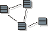

Artifacts >
Artifacts >
 Analysis & Design Artifact Set >
Analysis & Design Artifact Set >
 Design Model... >
Design Model... >
 Design Model >
Design Model >
 Guidelines >
Design Model
Guidelines >
Design Model
Artifacts >
Analysis & Design Artifact Set >
Design Model... >
Design Model >
Guidelines >
Design Model
Guidelines:
|
|
 Design Model |
The Artifact: Design Model is an object model describing the realization of use cases, and serves as an abstraction of the implementation model and its source code. |
Artifact: Analysis Classes represent roles played by instances of design elements; these roles may be fulfilled by one or more design model elements. In addition, a single design element may fulfill multiple roles. The following observations discuss the ways the analysis roles may be fulfilled:
Any combination of the above are also possible.
You should decide before the design starts how classes in the design model should relate to implementation classes; this should be described in the Design Guidelines specific to the project.
The design model can be more or less close to the implementation model, depending on how you map its classes, packages and subsystems to components, packages and subsystems in the implementation model. During implementation, you will often address small tactical issues related to the implementation environment that shouldn't have impact on the design model. For example, classes and subsystems can be added during implementation to handle parallel development, or to adjust import dependencies. For more information, refer to Activity: Structure the Implementation Model and Concepts: Mapping from Design to Code.
There should be a consistent mapping from the design model to the implementation model. The Artifact: Design Guidelines should define this mapping, and a consistent level of abstraction should be applied across the design model.
A good design model has the following characteristics:
For specific characteristics, see Checkpoints: Design Model.
|
Rational Unified
Process
|